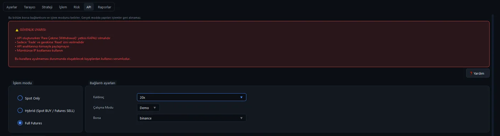

Settings
Trading System Configuration
Manage the exchange connection, trading mode, leverage and risk settings in one place. API keys are encrypted with a device-bound key and stored locally.

Real app screen, captured in virtual mode.
Connection, mode and risk
Settings are split into tabs: Settings, Scanner, Strategy, Trade, Risk, API and Reports.
Enter your API key safely
The warning on the API tab tells you exactly what to do: keep withdrawals disabled, grant only trade and, if needed, read permission, never share your keys and use IP restriction where possible.
- Keys are encrypted with a hardware-bound key
- A settings file copied to another device cannot be decrypted
- An API passphrase is also needed for OKX

Trading mode, leverage and exchange
Choose spot only, hybrid (spot BUY / futures SELL) or full futures; set the leverage and the exchange.
- Leverage: 1x, 2x, 3x, 5x, 10x, 20x
- Exchange: Binance or OKX
- Confirmation window when switching to real mode

Risk settings
On the Risk tab you set the daily loss limit, the maximum number of open positions, the maximum position duration and profit protection.
- Daily loss limit (USDT)
- Maximum positions and duration
- Trailing stop and break-even

What's in the settings?
Security first by default.
Encrypted API keys
Encrypted with a device-bound key and stored locally.
No withdrawal permission needed
The app recommends keeping the withdrawal permission disabled.
Trading modes
Spot only, hybrid or full futures.
Leverage
Options from 1x to 20x.
Mode lock
Trading type and exchange cannot be changed while a real position is open.
Risk limits
Daily loss limit, maximum positions and duration.
Frequently asked questions
Where is my API key stored?
On your computer, encrypted with a key derived from your device's hardware ID.
Which API permissions should I enable?
Trade and, if needed, read permission are enough. The withdrawal permission should stay disabled.
How do I enable real mode?
Real mode can be selected after an API key is entered; a confirmation window appears when switching. Real mode is locked in the Free version.
Related pages
Try your strategy in virtual mode today
Download the app, build your strategy and see how it works without using real money.